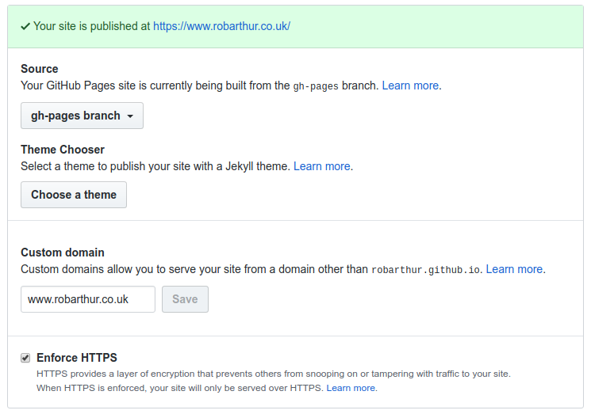

Migrating Site from S3 to Github Pages
Posted on Mon 24 February 2020 in Dev • 2 min read
Overview
I recently moved the hosting from S3/Cloudfront to Github pages. Given this is just a static site, there wasn't too much more to this than copying some files and changing some DNS records in Route53
Why the change?
- Cloudfront is pretty heavyweight for a relatively simple static site.
- Github pages is free! and supports free certificates through Let's Encrypt, even on a custom domain.
- I wanted to play around with Github Actions and this seemed like a nice entrypoint to that.
I ran into a lot of unexpected issues with the migration. The main issue being redirection from subdomains to an apex domain. For example I wanted to redirect all traffic to the apex domain https://robarthur.co.uk, but that ended up proving problematic and I found the documentation on Github lacking. Issues I ran into:
- Redirection from www subdomain to apex not working.
- Invalid certificates when redirecting
After a lot of playing around with various permutations the only solution I found to work consistently was to use the www subdomain as the canonical address, and redirect from the apex domain. If you want to see this setup, jump straight down below...
Changes to Hosting and DNS Records
So with that in mind I used the following guide to create a branch to push my static content to and enable my site:
https://help.github.com/en/github/working-with-github-pages/creating-a-github-pages-site
Once that was in place, I confimred it was accessible at the project address: https://robarthur.github.io/robarthur.co.uk/
Required setup for Github Pages with Custom Domain and HTTPS
On Github pages use the following setup. Note the CNAME uses the www subdomain and enforce HTTPS is set:

For your DNS provider, setup the following records (replacing the CNAME with your github username appropriately).
| Name | Type | Value |
|---|---|---|
| robarthur.co.uk | A | 185.199.109.153 185.199.108.153 185.199.110.153 185.199.111.153 |
| www.robarthur.co.uk | CNAME | robarthur.github.io |
Deploying Code
This changes how code is being deployed. Rather than generating and pushing static content to an S3 bucket, we can simply push this to the default gh-pages branch. From the the root of the project we could run...
# Setup the environment
python3 -m venv env/
source env/bin/activate
pip install -r requirements.txt
Then, to build and publish the content
make html
ghp-import output -p
I'm making use of the ghp-import package. It handles all of the commits/pushing of content, and wraps up some of the magic for creating CNAME files.
And that's it! Our new static content is deployed.
What's next?
So the whole purpose of this was to get some hands on experience with Github Actions. I think I'm in a better place for this now as all of our dependencies are Python based and our deployment is to Github. My hope is given this a Github action acting on a Github repo the credential/secrets management will be more intuative than pushing to S3... watch this space!